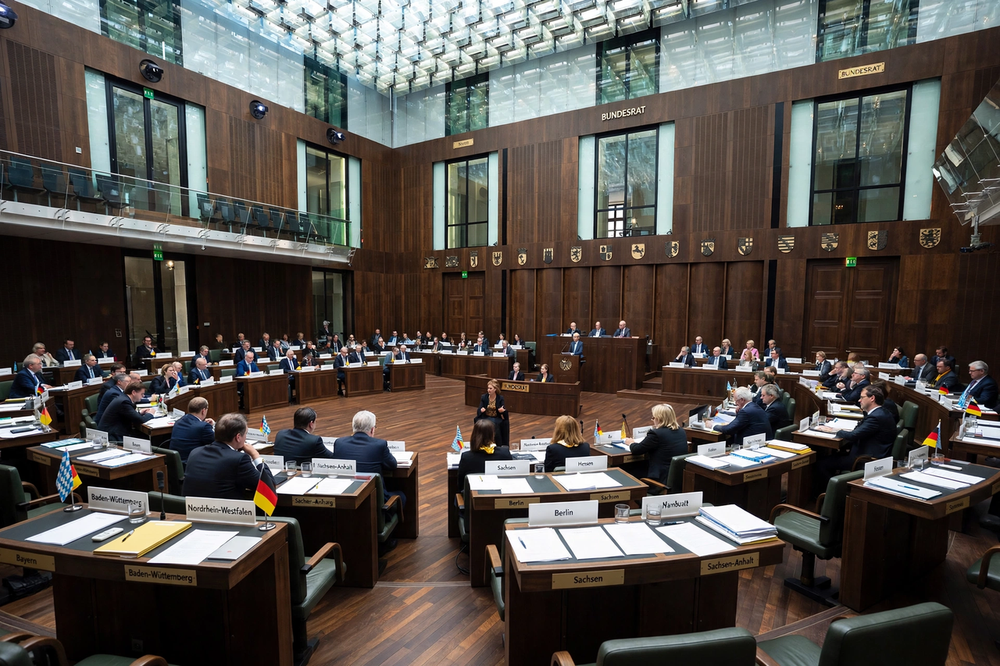

Bundesrat (Germany)

The Bundesrat (Federal Council) is a legislative body in Germany that represents the sixteen German federal states (Länder) at the national level. Together with the Bundestag, it forms the legislature of the Federal Republic. Unlike an elected senate, the Bundesrat is composed of delegations appointed by the state governments, whose members are typically state ministers or their representatives.
Composition
Each Land has between three and six votes depending on its population, giving a total of 69 votes. A state's votes must be cast en bloc, as instructed by its government, and delegations are led by members appointed and recallable by the state government. The presidency of the Bundesrat rotates annually among the minister-presidents of the Länder according to an agreed order. The Bundesrat has sat in Berlin since 2000, in the former Prussian House of Lords building.
Powers
Under the Basic Law, the Bundesrat participates in federal legislation. Bills that affect the Länder — notably those touching state finances, taxation shared with the states, or administration carried out by the states — require its consent (zustimmungsbedürftig) and can be blocked by it outright. For other bills, the Bundesrat may lodge an objection that the Bundestag can override by a corresponding majority. It may also introduce its own bills, scrutinises European Union legislation affecting the states, and must approve constitutional amendments by a two-thirds majority. A mediation committee (Vermittlungsausschuss) of Bundestag and Bundesrat members resolves disagreements.
Character
Because state elections occur throughout the federal electoral cycle, the political majority in the Bundesrat often differs from that in the Bundestag, which can constrain the federal government and has made the Bundesrat a significant arena of German politics. Reformers periodically debate whether its consent powers over legislation are too broad; the federalism reform of 2006 reduced the share of bills requiring consent.